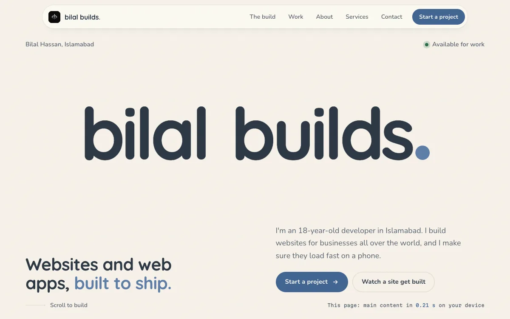

GEO
When someone asks ChatGPT, Gemini or Perplexity about a business like yours, the answer comes from what it can read on the web. GEO, short for generative engine optimization, makes sure that when an assistant reads your website, it finds plain facts it can quote: what you do, where you are, when you're open and what you charge.
What a person sees
What an AI assistant reads
Ask the assistant
Pick a question, then switch versions and ask it again.
An illustration of how assistants read a page. No AI model runs here. The answers are written to show the difference.
What you get
- Facts written as textHours, prices, areas and services as real words on the page, not inside images or PDFs.
- Structured dataOrganization, LocalBusiness, Service and FAQ markup, so an assistant doesn't have to guess.
- One version of the truthThe same name, address and phone number on your site and on every listing.
- Answers to real questionsShort, direct answers to what your customers actually ask.
- An llms.txt fileA plain-text summary of your site for AI tools that look for one.
- A before and afterI ask the main assistants about your business before and after, and show you what they say.
Where I've done it
GEO is new, and I won't pretend to have a long client list for it. I do it on my own site first.

This site
Every page describes who I am and what I offer in structured data, with one consistent identity across the site and my profiles.
View the page source to see this page's structured data.
This page, as a machine reads it
That's this page's own structured data, read live from the page you're on. It's what an assistant gets before it reads a single sentence.
Questions people ask
What is GEO?
Generative engine optimization. It's the work of making your business easy for AI assistants to read, understand and quote correctly, the way SEO does for search engines.
Is it different from SEO?
It's built on the same foundations: fast pages and clear structure. The extra work is making facts explicit and consistent, because an assistant quotes facts instead of ranking pages.
Can you guarantee ChatGPT will recommend me?
No, and be careful with anyone who does. What I can do is remove the reasons an assistant would skip you or get your details wrong.
Let's make you quotable
Ask an AI assistant about your business today, then send me what it said. That's the best place to start.